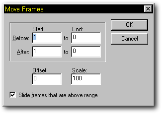

Move Frames allows you to change when a set of key frames occurs, and or scale
a set of keyframes in time. This would be used to change the timing of when a
portion of an action occurs, or how quickly a portion of an action occurs.
Move Frames allows you to change when a set of key frames occurs, and or scale
a set of keyframes in time. This would be used to change the timing of when a
portion of an action occurs, or how quickly a portion of an action occurs.

The Move Frames dialog
Selecting Move Frames from the Action drop down menu brings up the Move Frames dialog. The dialog shows a frame range for Before the move, After the move, and the Offset and Scale that result from the change between Before and After.
The Scale and Offest fields can also be changed manually, which will automatically fill in the After frame range. Be sure not to accidentially hit the Enter key if you want to change more than one value; either click in the next field, or press Tab. You can also specify whether you want to slide the end of the action so that the distance between the last frame of the Before range says the same distance from the next key frame in the action (“Slide frames that are above range”). Turning “Slide frames that are above range” off will lose any key frames that the range happens to slide past. Negative “Offsets” will always replace key frames that the new range happens to lie on top of.
Other Advanced Action Topics:
Action Overloading
Action Properties
Flatten Object